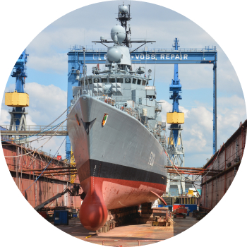
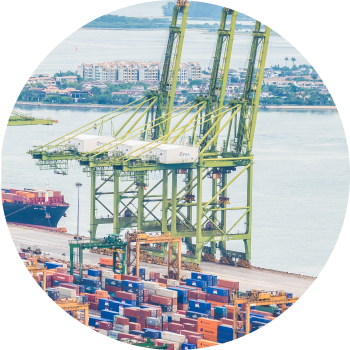
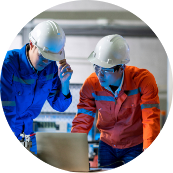
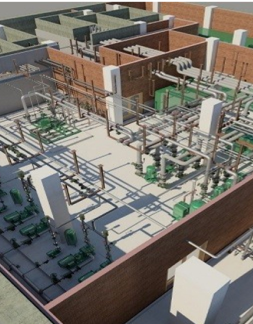

> 사업분야 > 신공법
신공법
New construction method
조선·해양 분야의 선도기업으로 기술 개발에 앞장서겠습니다.
공법최적화
-

- 듀얼 리프팅(Dual Lifting)
- 8,000톤급과 3,600톤급 해상크레인 2대를 결합하여 단일 크레인처럼 동시 조작할 수 있는 Dual Lifting 공법을 개발하여 인양, 이동, 할 수 있는 세계 최대의 능력을 확보하였습니다.
-

- One-time Setting
- 품질의 저하 및 생산성 감소 문제를 해결하기 위해 대형블록의 안정적 치수품질을 확보할 수 있는 One-Time Setting 생산기술을 확보
-

- 3D 스캔 기반 CFT/Lashing 시뮬레이션
- 컨테이너의 기능 검사와 고박 검사를 위한 기존의 방식은 많은 인력과 시간이 투입되며, 다른 공정에 영향을 미쳤고 개선하기 위해 3D스캔 CFT시스템과 Lashing시스템을 개발해 적용했습니다.
자동화
Automation
- 배관 용접·검사 자동화
- 크고 두꺼운 배관을 효율적으로 용접할 수 있는 공법을 개발하여 생산성을 향상시켰습니다. Hot-Wire TIG 오비탈 용접공법은 기존 보다 3배 이상, FCAW 오비탈 용접공법은 기존보다 6배 이상 용접속도가 향상되었습니다. 또한, 배관 내부를 주행하며 용접 후 배관을 청소·검사 할 수 있는 장비를 개발하였으며 세계 최초로 옥외 작업장에서 배관 내부 방사선 검사를 수행하여 방사선 검사 시간과 피폭시간을 대폭 단축시켰습니다.
- 배관 오비탈 용접장비
- 해양플랜트 제작에서 품질에 가장 큰 영향을 주는 공정은 배관용접 이음부입니다. 기존에는 용접사 개개인의 역량에 따라 좌우됐던 배관용접 품질과 생산성을 획기적으로 개선하고자 삼성중공업은 동종업계 최초로 배관자동용접(오비탈용접) 공법을 도입했습니다. 이로 인해 용접불량률을 획기적으로 저감했고, 용접생산성 역시 큰 폭으로 향상시켰습니다.
스마트야드
Digital Transformation
- 3D 도면
- 제작처에서 2D도면을 참조해 제작하던 기존 방식을 벗어나, 3D 모델로부터 직접 3차원 형상정보와 각종 제작, 가공정보를 추출 후 제작처로 전송함으로써 2D도면 없이 제작이 가능하도록 개발했습니다. 제작도뿐만 아니라 설치도까지 확장되면 도면 없는 Drawingless Yard가 구현됩니다.
- SEVAS·모바일
- 3D 경량모델을 활용해 공정진도를 직관적으로 이해하고, 태블릿을 활용해 야드전용 산업용 초고속 무선망(P-LTE) 기반으로 최신도면 및 3D 모델을 생산 부문에 전달함과 동시에 실시간 실적입력을 가능하게 해 4차 산업혁명 기술 중 Digital Twin 기술을 선도하고 있습니다.
